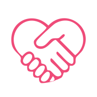

Wat het is
Iedereen heeft een verhaal.
Maar niet alles is makkelijk uit te leggen.
Met een persoonlijke animatie vertalen we jouw ervaringen, gevoelens en inzichten naar iets wat anderen direct kunnen zien en voelen.
Geen standaard verhaal, maar iets dat écht bij jou past.
Voor wie
Voor iedereen die zijn verhaal zichtbaar wil maken.
Voor jezelf, of om te delen met anderen.
Bijvoorbeeld:
als woorden tekortschieten
als je iets belangrijks wilt uitleggen
als je wilt laten zien wie je écht bent, of wat je graag doet
Hoe het werkt
-
1
Kennismaking
We bespreken jouw verhaal en wat je wilt laten zien.
-
2
Ontwikkeling & animatie
We vertalen samen jouw verhaal naar een helder script en brengen dit tot leven met beeld, stem en muziek.
Samen stemmen we alles af, zodat het echt bij jou past.
-
3
Afronding
Je ontvangt jouw animatie, klaar om te gebruiken of te delen.

Je blijft tijdens het hele proces betrokken, zodat het eindresultaat echt als van jou voelt.
Interesse?
Plan een vrijblijvend gesprek of vraag direct een animatie aan.